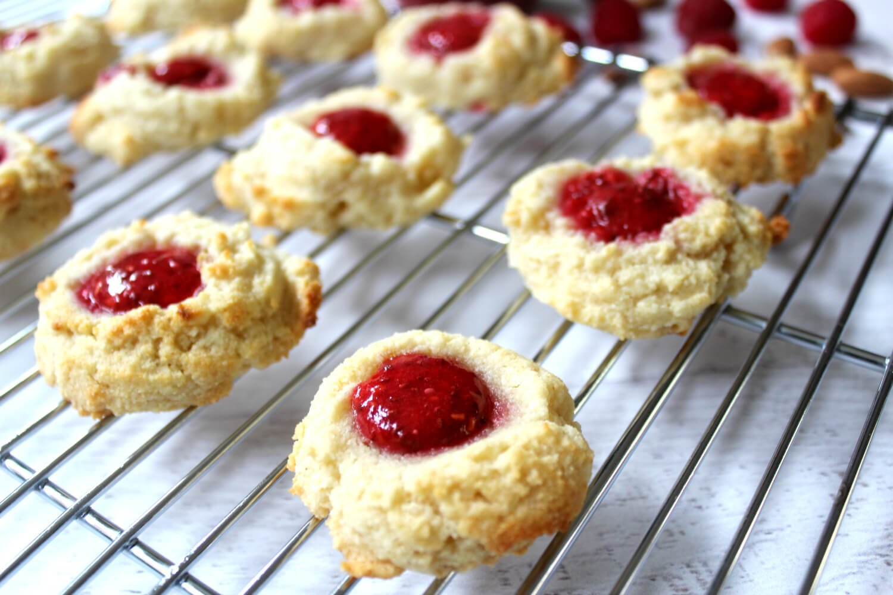

Almond flour thumbprint cookies are an excellent post-meal treat
Ingredients
- 6 tablespoons, cold-pressed coconut oil
- 1/3 Cup, maple syrup
- 1/2 teaspoon, vanilla extract
- 1/4 teaspoon, salt
- 1-1/2 cups, blanched almond flour
- Rasberry jam of your choice
Steps
- Mix the coconut oil, syrup and vanilla in a bowl
- Slowly add the salt and almond flour to the bowl while mixing thoroughly
- Once mixed, hand-roll balls of dough approx. 1.5 to 2-inches in diameter
- Arrange dough balls over a cookie sheet on a baking pan
- Gently press thumb into the dough ball, forming a cup for the jam
- Place servings of jam on each cookie
Baking
- Preheat oven to 350F
- Once preheated, place pan of cookies on the top rack
- Bake for approx 20-minutes, or until golden brown
- Remove and let sit until cool
Return to top
Return to main page